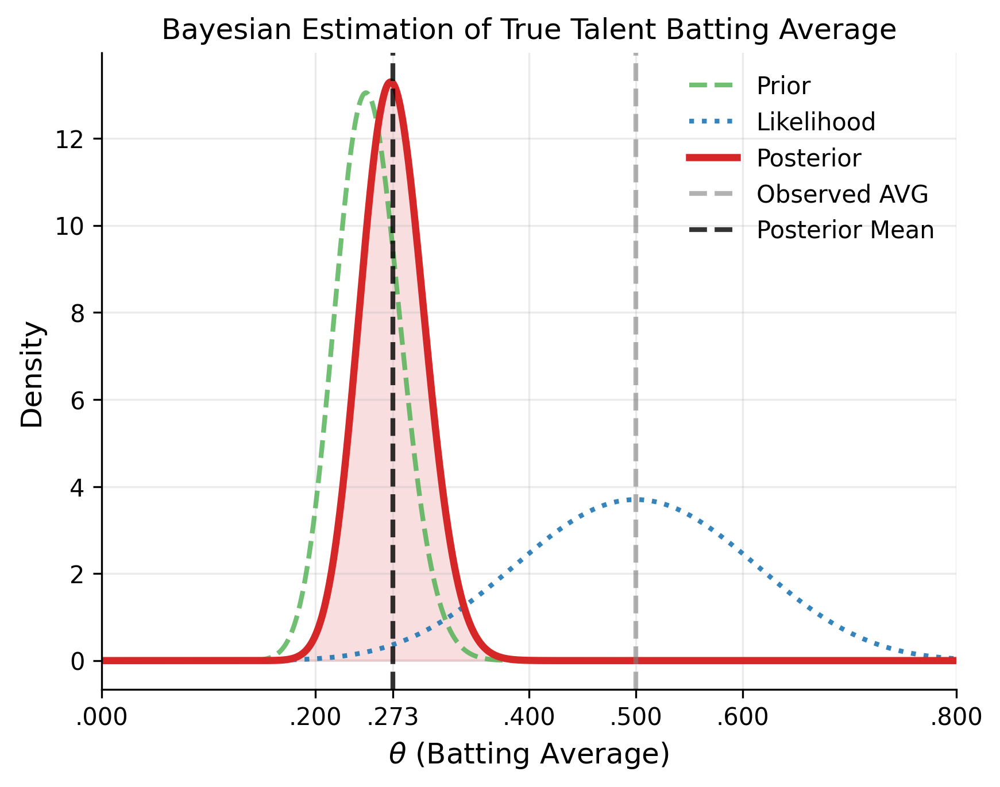

BDA, Chapter 1: Probability and Inference
This is the first entry in a series where I work through Andrew Gelman's Bayesian Data Analysis (3rd edition) one chapter at a time, summarizing the key ideas of what I read and then applying the content of that chapter within a baseball context. The goal of this series is to really solidify my understanding of Bayesian statistics and to explore how these concepts can be applied in something I'm passionate about - baseball.
A Summary of Chapter 1
Chapter 1 of BDA3 introduces three key steps in Bayesian data analysis:
- Setting up a full probability model: the first step is to define a joint probability distribution for all observations with latent quantities that should be consistent with your own domain knowledge about the problem and the data generating process.
- Conditioning on observed data: the second step is computing and interpreting the appropriate posterior distribution, $\pi(\theta | x)$.
- Evaluating the model fit and the implications of the resulting posterior: the third step is to understand how well the model fits the data, if the resulting findings make logical sense in the real world, and how sensitive the results are to the modeling assumptions made in step 1.
Statistical inference is concerned with making conclusions from numerical data about quantities that are not directly observed. Bayesian inference, specifically, is concerned with developing a joint probability model and performing computations in order to summarize the resulting posterior distribution in appropriate ways. And it begins with making probability statements about unobserved quantities of interest given the observed data.
To do this, we begin with a model that does provide a joint probability distribution for all observed and unobserved quantities. Let $\theta$ be a vector of our quantities - i.e., parameters - of interest, and $x$ be a vector of our observed data. Then the joint probability distribution of $\theta$ and $x$ is given by: $$p(\theta, x) = p(\theta)p(x \mid \theta),$$ where $p(\theta)$ denotes our prior distribution - encodes our beliefs about the unobserved quantities before we see the data - and $p(x\mid \theta)$ our likelihood function - encodes our beliefs about the data generating process. When we condition on our observed data, $x$, we obtain the posterior distribution by using Bayes' Rule: $$\pi(\theta \mid x) = \frac{p(\theta, x)}{p(x)} = \frac{p(\theta)p(x\mid \theta)}{p(x)},$$ where $p(x)$ is the marginal likelihood, which is the normalizing constant that ensures the posterior distribution sums to 1, and is itself given by: $$p(x) = \sum_{\theta} p(\theta)p(x\mid \theta)$$ in the discrete case, and $$p(x) = \int p(\theta)p(x\mid \theta)\, d\theta$$ in the continuous case. The observed data, $x$, can also only affect the posterior distribution through the likelihood function, $p(x\mid \theta)$. It is is actually more informative when $p(x)$ is referred to as the prior predictive distribution rather than marginal likelihood. Prior because it doesn't condition on a previous observation, and predictive because it's the distribution for a quantity that is observable. Because $p(x)$ does not depend on $\theta$, we can also write the posterior as: $$\pi(\theta \mid x) \propto p(\theta)p(x\mid \theta)$$ to yield the unnormalized posterior distribution.
When we want to make inferences about an unknown observable, $y$, given our observed data, $x$, we can compute the posterior predictive distribution: $$p(y \mid x) = \int p(y, \theta \mid x)\, d\theta = \int p(y \mid \theta, x)p(\theta \mid x)\, d\theta = \int p(y \mid \theta)p(\theta \mid x)\, d\theta.$$ Posterior because we are conditional on the observed $x$, and predictive because it's a distribution for the observable $y$. The posterior predictive distribution is inherently a weighted average of $p(y \mid \theta)$, where the weights are given by the posterior distribution, $p(\theta \mid x)$.
In Bayesian statistics, probability is used as the core measure of uncertainty about unknown quantities in the model. Bayesian inference enables statements to be made from your own domain knowledge (based on the data) concerning a parameter of interest (unobservable or as yet unobserved) in a systematic way using probability as the measure. This follows Gelman's guiding principle that "the state of knowledge about anything unknown is described by a probability distribution." A Bayesian credible interval for an unknown quantity, $\theta$, can be directly interpreted as having a high probability of containing $\theta$ vs the frequentist confidence interval, which has to be interpreted strictly in relation to repeated experiments and the long-run frequency of containing $\theta$.
Why using probability as the measure of uncertainty is reasonable is based on a few reasons that Gelman outlines:
- Physical randomness induces uncertainty, so it would make sense to describe uncertainty in the context of random events.
- In placing all statistical inference in the context of decision-making with gains and losses, reasonable axioms imply that uncertainty must be described in terms of probability.
- Imagine a scenario where you have probability $p$ of an event $E$ occurring, where $p\in[0, 1]$, as the fraction at which you would bet $\$ p$ for a return of $\$ 1$ if $E$ occurs. I.e., you stand to gain $\$ (1-p)$ if $E$ does occur, and lose $\$ p$ if it does. However, there are some fundamental difficulties within this scenario. For starters, exact odds are required for all events, but how could you assign exact odds if you are not sure? And if a person is willing to bet with you, and has information that you don't, then it might not be wise to take that bet even if you do have some probability of success.
Gelman concludes the chapter by describing the reasons as to why Bayesian statistics is useful:
- There is much flexibility because of the possible incorporation of multiple levels of randomness, the possible ability to combine information from different sources, and the possible incorporation of reasonable sources of uncertainty in inferential summaries.
- People tend to confuse the interpretability of frequentist confidence intervals as Bayesian credible intervals - Bayesian inference directly provides that probabilistic interpretation.
This chapter pretty much just introduces the foundational concepts of Bayesian statistics, and the rest of the chapters will build upon these foundations.
Baseball Application: Estimating True Talent Batting Average
We'll now apply the concepts from Chapter 1 to a baseball analytics problem: estimating a player's "true" batting average after observing some at-bats early in the season.
Problem Statement
Suppose a hitter is 10-for-20 through his first week of the season, batting .500. Should we believe he's a .500 hitter? Probably not haha. This is where Bayesian inference would come in handy to estimate what his likely "true" batting average is.
Let $\theta$ be the player's true batting average - or the probability of getting a hit in any given at-bat. We'll model each at-bat as an independent Bernoulli trial with success probability $\theta$. Given $n$ at-bats with $y$ hits, the likelihood function is: $$y \mid \theta \sim \text{Bin}(n, \theta).$$
Choosing a prior
Across years, we know that batting averages tend to cluster around .250 with relatively little spread. A reasonable prior for $\theta$ is therefore: $$\theta \sim \text{Beta}(\alpha, \beta).$$ We can set $\alpha = 50$ and $\beta = 150$ to reflect this since, the expectation of the Beta distribution is $\frac{\alpha}{\alpha + \beta}$ - or in this case: $\frac{50}{50+150} = .250$. This encodes our prior to be right at league average - with a standard deviation of $\sqrt{\frac{\alpha \beta}{(\alpha + \beta)^2 (\alpha + \beta + 1)}}$, or about $0.03$, which comfortably covers the range of most hitters.
The posterior
We can compute the posterior distribution using Bayes' rule: $$ \pi(\theta \mid y) = \frac{p(\theta, y)}{p(y)} \propto p(\theta)p(y \mid \theta)$$ $$ \propto Beta(50, 150)\times Bin(20, \theta)$$ $$ = \frac{1}{B(50, 150)}\theta^{(50 - 1)}(1-\theta)^{(150 - 1)} \times \binom{20}{10}\theta^{10}(1-\theta)^{(20-10)}$$ $$ \propto \theta^{(50 + 10 - 1)} (1-\theta)^{(150 + 20 - 10 - 1)} = \theta^{59}(1-\theta)^{159}$$ $$ \implies \theta \mid y \sim Beta(60, 160)$$ $$ \implies \mathbb{E}[\theta \mid y] = \frac{60}{60 + 160} \approx .273$$
The posterior mean is approximately .273 - the model "shrunk" the observed .500 back toward the league average of .250, which is exactly the kind of regularization we'd want that early in the season. We can visualize the regression of the observed batting average back toward the prior in the figure below.

Code
Here's the code I used to generate the figure above in Python.
import numpy as np
import matplotlib.pyplot as plt
from matplotlib.ticker import FuncFormatter
from scipy.stats import beta
plt.style.use("tableau-colorblind10")
## data points from 0 to 1 representing possible batting averages
theta = np.linspace(0, 1, 1_000)
## our prior: \theta ~ Beta(50, 150)
prior = beta.pdf(theta, 50, 150)
## our likelihood: y | \theta ~ Bin(20, 10)
## we use the beta distribution to plot the shape of the binomial likelihood as a function of \theta
likelihood = beta.pdf(theta, 10 + 1, 20 - 10 + 1)
## resulting posterior: \theta | y ~ Beta(60, 160)
posterior = beta.pdf(theta, 60, 160)
fig, ax = plt.subplots()
ax.plot(theta, prior, color="#4CAF50", lw=2, ls="--", alpha=0.8, label="Prior")
ax.plot(theta, likelihood, color="#1f77b4", lw=2, ls=":", alpha=0.9, label="Likelihood")
ax.plot(theta, posterior, color="#D62728", lw=3, label="Posterior")
ax.fill_between(theta, posterior, color="#D62728", alpha=0.15)
ax.axvline(10 / 20, color="gray", ls="--", lw=2, alpha=0.6, label="Observed AVG")
ax.axvline(60 / (60 + 160), color="black", ls="--", lw=2, alpha=0.8, label="Posterior Mean")
xticks = sorted(set(list(ax.get_xticks()) + [10 / 20, 60 / (60 + 160)]))
ax.set_xticks(xticks)
ax.xaxis.set_major_formatter(FuncFormatter(lambda x, pos: f"{x:.3f}".replace("0.", ".")))
ax.set_xlabel(r"$\theta$ (Batting Average)", fontsize=12)
ax.set_ylabel("Density", fontsize=12)
ax.set_title("Bayesian Estimation of True Talent Batting Average",)
plt.xlim(0, 0.8)
ax.grid(True, alpha=0.25)
ax.spines["top"].set_visible(False)
ax.spines["right"].set_visible(False)
ax.legend(frameon=False)
plt.show() What I learned
This baseball example helps illustrate how Bayesian inference can be used to update our beliefs about anything really. We knew in this case that the player's observed AVG was not sustainable based on our own domain knowledge. So the posterior distribution reflects a more realistic estimate of the player's true talent AVG. As the season progresses and $n$ grows, the likelihood dominates and the posterior concentrates around the player's actual ability. But early on, the prior takes most of the weight in the model, which helps prevent anyone from making any rash conclusions about a player's ability based on a small sample size.
Key Takeaway
To me, Bayesian inference is just the formal, probabilistic version of something baseball people do intuitively: you don't believe a guy is a .500 hitter after 20 at-bats. Bayes' rule makes that intuition rigorous.
References
- Gelman, A., Carlin, J. B., Stern, H. S., Dunson, D. B., Vehtari, A., & Rubin, D. B. (2013). Bayesian Data Analysis (3rd ed.). Chapman & Hall/CRC.